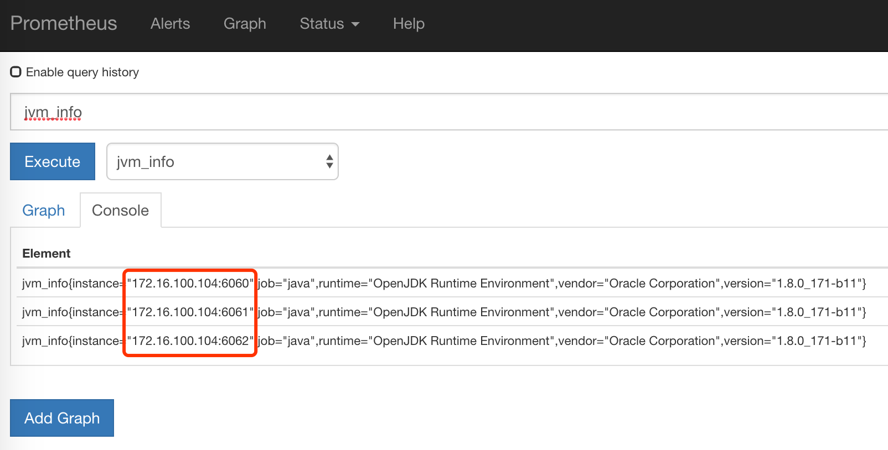
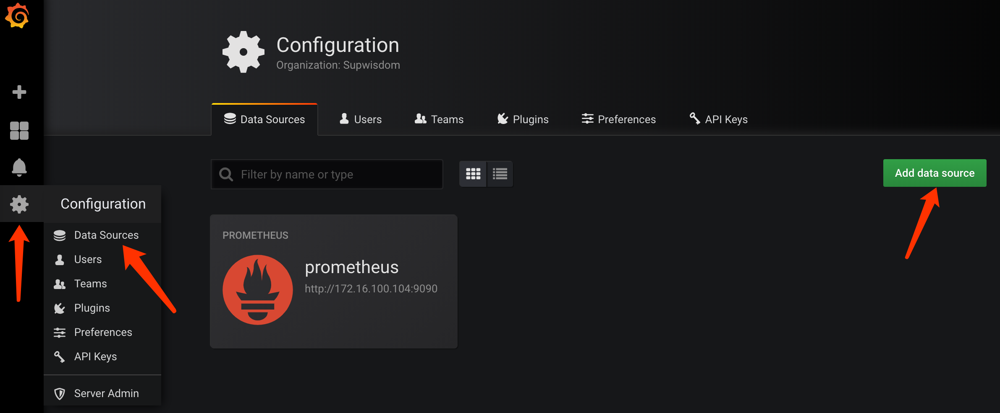
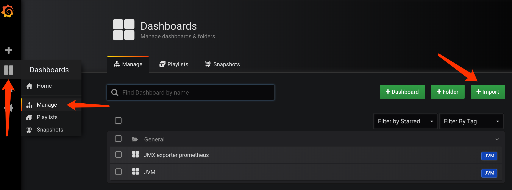
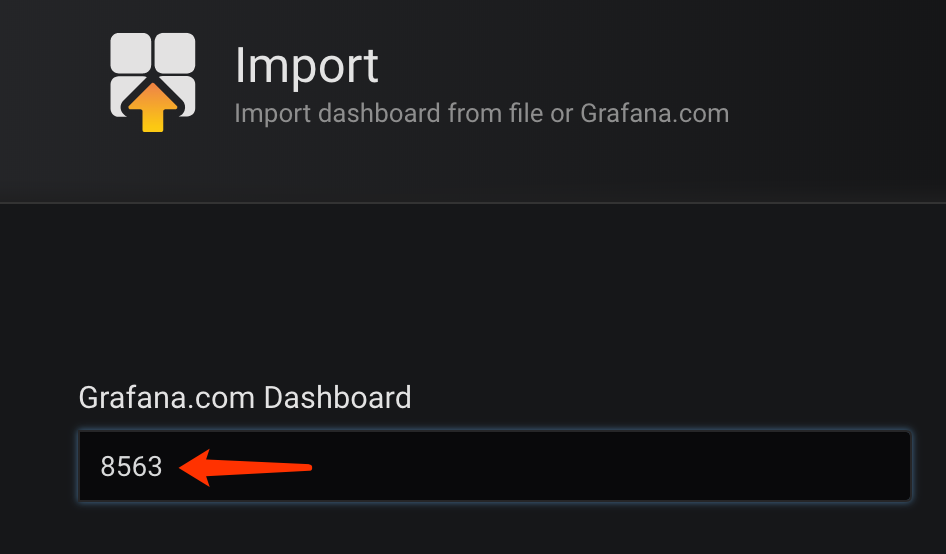
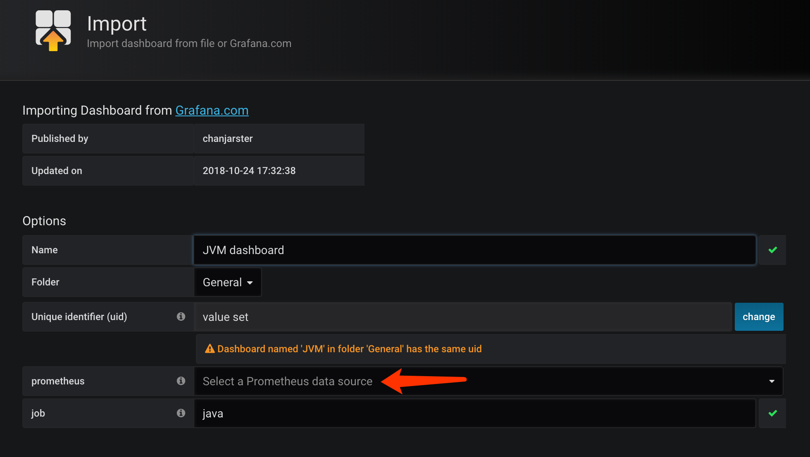
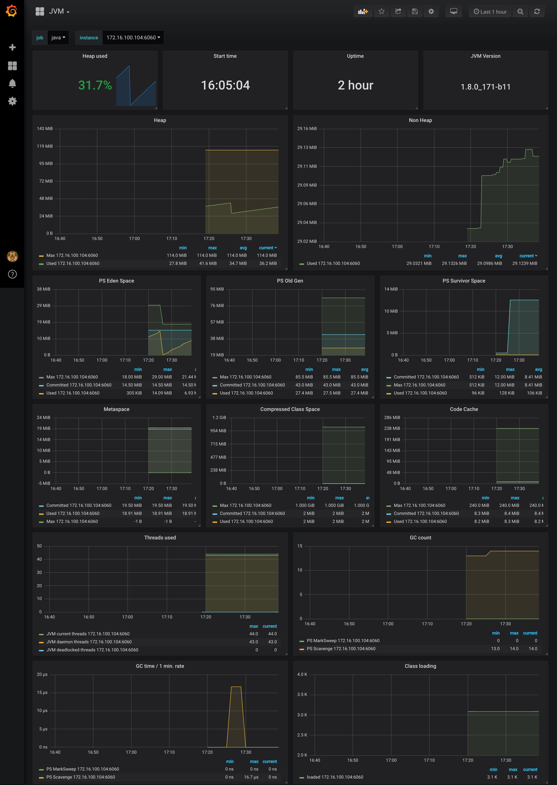

本文介绍如何使用Prometheus+Grafana监控JVM的方法。
本文所提到的脚本可以在这里下载。
摘要
用到的工具：
- Docker，本文大量使用了Docker来启动各个应用。
- Prometheus，负责抓取/存储指标信息，并提供查询功能。
- Grafana，负责数据可视化。
- JMX exporter，提供JMX中和JVM相关的metrics。
- Tomcat，用来模拟一个Java应用。
先讲一下大致步骤：
- 利用JMX exporter，在Java进程内启动一个小型的Http server
- 配置Prometheus抓取那个Http server提供的metrics。
- 配置Grafana连接Prometheus，配置Dashboard。
第一步：启动几个Java应用
1) 新建一个目录，名字叫做prom-jvm-demo。
2) 下载JMX exporter到这个目录。
3) 新建一个文件simple-config.yml内容如下：
---
lowercaseOutputLabelNames: true
lowercaseOutputName: true
whitelistObjectNames: ["java.lang:type=OperatingSystem"]
rules:
- pattern: 'java.lang<type=OperatingSystem><>((?!process_cpu_time)\w+):'
name: os_$1
type: GAUGE
attrNameSnakeCase: true4) 运行以下命令启动3个Tomcat，记得把<path-to-prom-jvm-demo>替换成正确的路径：
docker run -d \
--name tomcat-1 \
-v <path-to-prom-jvm-demo>:/jmx-exporter \
-e CATALINA_OPTS="-Xms64m -Xmx128m -javaagent:/jmx-exporter/jmx_prometheus_javaagent-0.3.1.jar=6060:/jmx-exporter/simple-config.yml" \
-p 6060:6060 \
-p 8080:8080 \
tomcat:8.5-alpine
docker run -d \
--name tomcat-2 \
-v <path-to-prom-jvm-demo>:/jmx-exporter \
-e CATALINA_OPTS="-Xms64m -Xmx128m -javaagent:/jmx-exporter/jmx_prometheus_javaagent-0.3.1.jar=6060:/jmx-exporter/simple-config.yml" \
-p 6061:6060 \
-p 8081:8080 \
tomcat:8.5-alpine
docker run -d \
--name tomcat-3 \
-v <path-to-prom-jvm-demo>:/jmx-exporter \
-e CATALINA_OPTS="-Xms64m -Xmx128m -javaagent:/jmx-exporter/jmx_prometheus_javaagent-0.3.1.jar=6060:/jmx-exporter/simple-config.yml" \
-p 6062:6060 \
-p 8082:8080 \
tomcat:8.5-alpine5) 访问http://localhost:8080|8081|8082看看Tomcat是否启动成功。
6) 访问对应的http://localhost:6060|6061|6062看看JMX exporter提供的metrics。
备注：这里提供的simple-config.yml仅仅提供了JVM的信息，更复杂的配置请参考JMX exporter文档。
第二步：启动Prometheus
1) 在之前新建目录prom-jvm-demo，新建一个文件prom-jmx.yml，内容如下：
scrape_configs:
- job_name: 'java'
scrape_interval: 30s
static_configs:
- targets:
- '<host-ip>:6060'
- '<host-ip>:6061'
- '<host-ip>:6062'2) 启动Prometheus：
docker run -d \
--name=prometheus \
-p 9090:9090 \
-v <path-to-prom-jvm-demo>:/prometheus-config \
prom/prometheus --config.file=/prometheus-config/prom-jmx.yml3) 访问http://localhost:9090看看Prometheus是否启动成功，在输入框里输入jvm_info然后执行，应该可以看到如下图的结果：

如果没有看到三个instance，那么等一会儿再试。
第三步：配置Grafana
1) 启动Grafana：
docker run -d --name=grafana -p 3000:3000 grafana/grafana2) 访问http://localhost:3000，使用admin/admin登录。
3) 添加Prometheus数据源，如下图所示到添加数据源页面：

4) 配置数据源信息：
- Name：随便取
- Type：Prometheus
- URL：
http://<host-ip>:9090 - 其余不要设置，点击
Save & Test，应该会返回成功结果
5) 导入Dashboard。我们不需要重头自己做Dashboard，用现成的就行，按下图所示进入导入页面

6) 使用我制作的JVM Dashboard，页面右侧出现的ID号是8563，记住这个号，填在如下图所示的位置：

7) 然后鼠标点击别处稍等一下，出现下图，选择一下数据源就可以了

8) 最后打开刚刚导入的Dashboard，如下图：
